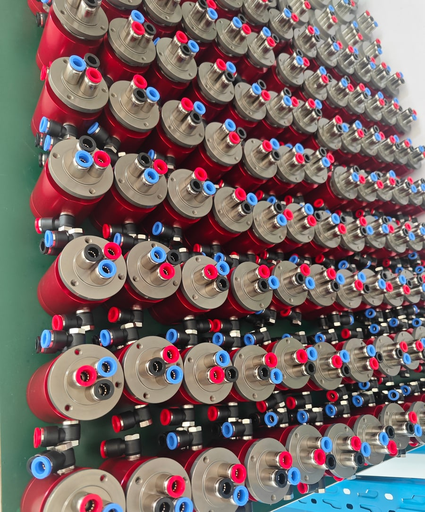
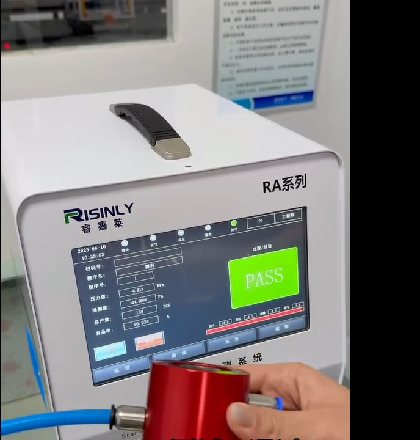

100%-ный поканальный контроль герметичности пневматических вращающихся соединений
После окончательной сборки каждое готовое пневматическое вращающееся соединение Begapunk проверяется сжатым воздухом отдельно по каждому каналу до упаковки и передачи на склад.
Производственный контроль в пять этапов
Ниже показана полная последовательность — от решения о приёмке до действий с несоответствующим изделием.
Окончательная сборка и очередь на контроль
Готовые изделия поступают на заключительный этап производственного контроля.
Последовательная проверка каждого канала
Один канал проверяется при 1,0 МПа; остальные каналы остаются без давления и открытыми.
Набор и выдержка давления
Номинальный цикл включает около 1 секунды набора давления и 4 секунды выдержки.
Допуск только после PASS по всем каналам
Упаковка и передача на склад разрешаются только после успешной проверки всех каналов.
Действия при результате NG
Изделие помещают в жёлтый карантинный контейнер, устанавливают причину несоответствия, при возможности ремонтируют и полностью перепроверяют; неремонтопригодное изделие списывают в брак.
Подтверждённые параметры производственного контроля
| Параметр контроля | Действующий производственный процесс |
|---|---|
| Этап контроля | После окончательной сборки |
| Охват контроля | 100 % готовых изделий |
| Охват каналов | Каждый канал проверяется отдельно |
| Среда и давление | Сжатый воздух при 1,0 МПа (около 10 бар) |
| Состояние остальных каналов | Без давления, каналы открыты |
| Цикл контроля | Около 1 секунды набора давления и 4 секунды выдержки |
| Действия при NG | Жёлтый карантинный контейнер; поиск причины; ремонт и полный повторный контроль либо списание в брак |
| Условие допуска | Все каналы должны пройти контроль до упаковки и передачи на склад |
Производственный контроль на практике
Фотографии показывают собранные изделия в очереди на контроль и один цикл поканальной проверки.


Изоляция и обработка изделий с результатом NG
Каждое изделие с результатом NG помещают в жёлтый карантинный контейнер и передают ответственному специалисту для поиска причины. Ремонтопригодное изделие после ремонта проходит полный повторный контроль всех каналов. Неремонтопригодное изделие списывают в брак. Упаковка и передача на склад разрешены только после PASS по всем каналам.
Согласуйте требования к контролю для вашего проекта
Направьте чертёж изделия, число каналов, рабочую среду и давление, а также требования к документам по конкретному заказу.
- Чертёж изделия и число каналов
- Рабочая среда и давление
- Требования к приёмке по заказу
- Протоколы контроля, которые необходимо приложить к поставке